Efficient AI
Deep Learning Review
Aditya Desai
Many thanks to all the resources listed in References on the main website. Almost all figures are taken from these resources; some were generated with Gemini. Some images are taken from Google Images and still need proper citation (in progress).
Neuron
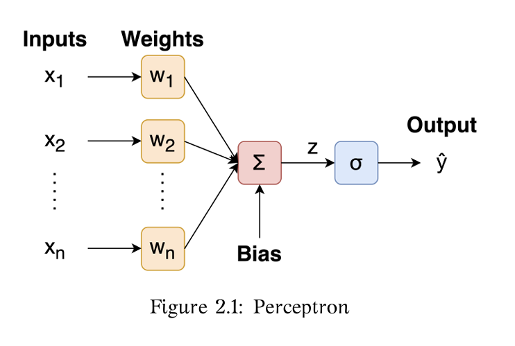
- Basic learnable unit of neural networks
- For a long time, all innovative work was on feature enginnering (designing x)
- Some form of activation function is applied to the output (why?)
Linear Layer
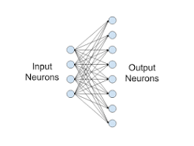
- Many parallel neurons
- Most common layer in neural networks
Deep learning
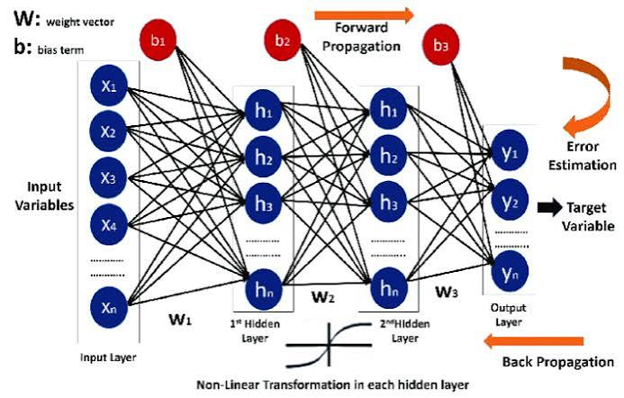
- Stacks of computation
- Magic of Deep learning: Replace feature engineering with representation learning
- Utility of Activations?
Activation Functions
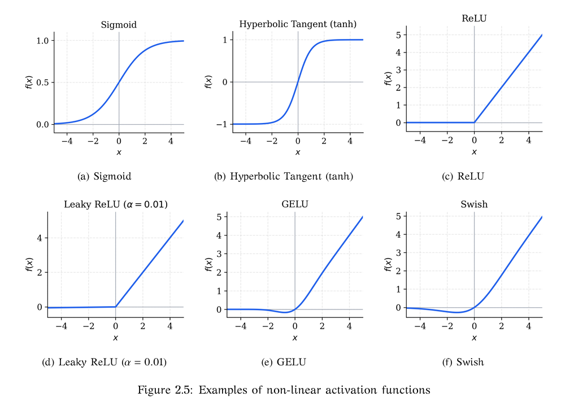
- Sigmoid / tanh -> RELU -> Leaky RELU -> GELU -> SiLU
Other building blocks in ML? Convolution
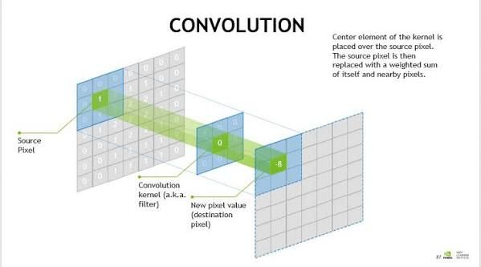
- 1D convolution , 2D convolution
- Translation invariant features (why?)
- Application: Image / Video / Speech .
- Mostly replaced by Transformers !
Other building blocks in ML? RNN

- Sequence data
- Inspired from Hidden Markov Models
- Application: Text / Speech / Music .
- Mostly replaced by Transformers ! (Do make appearance is some layer in new LLM architectures)
Transformer Block
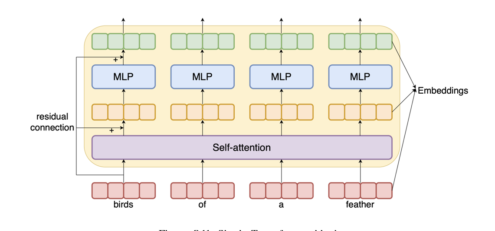
- Has MLP Block (which manipulates every token embedding -- shared across tokens)
- Self Attention which combines embedding of all tokens into a new "contextualized" embedding
- Self Attention takes $n$ token inputs and outputs $n$ token embeddings
- Bidirectional (e.g. BERT) / Causal (e.g. LLM models)
Self Attention
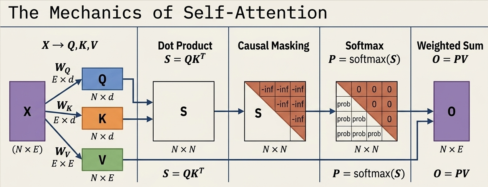
- Every token is down projected into a key, query, and value embedding.
Self Attention
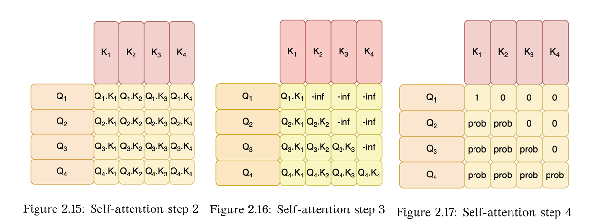
- Attention scores are computed by the dot product of query and key embeddings.
- If causal (in case of autoregressive models), a causal mask is applied before softmax.
- Softmax is applied to get attention weights.
Self Attention
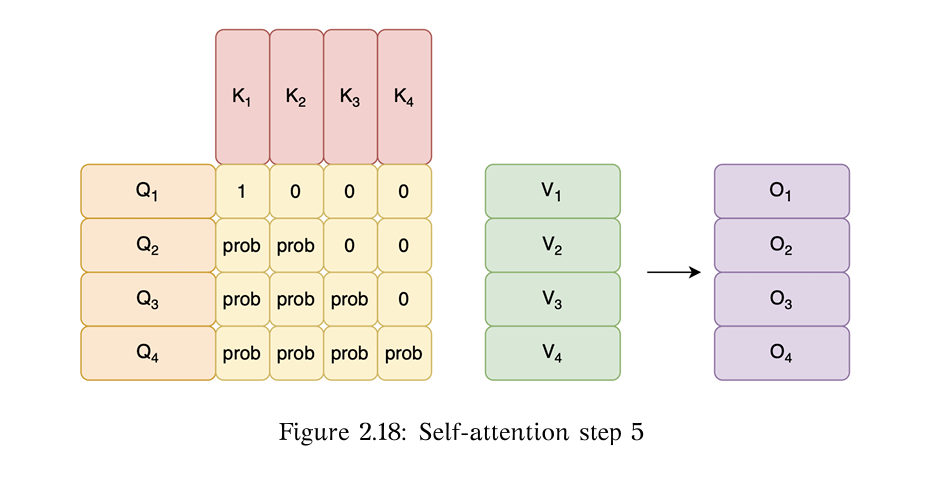
- Output tokens are a linear combination of value embeddings weighted by attention weights.
Auto regressive prediction of tokens
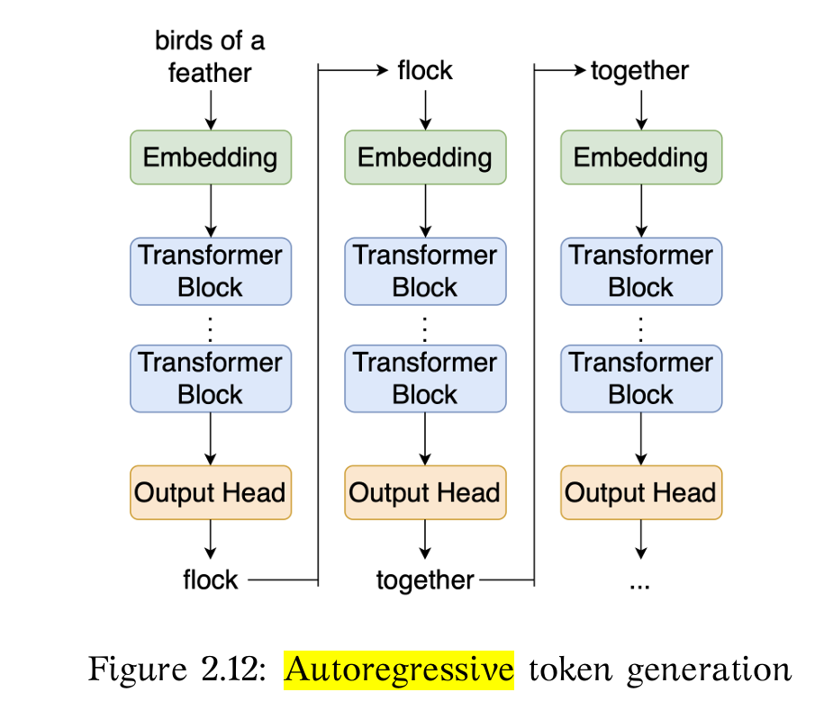
- Generates one token at a time. Better to store K and V embedding to avoid recomputation
- KV Cache.
Other Components of Interest ? Normalizations
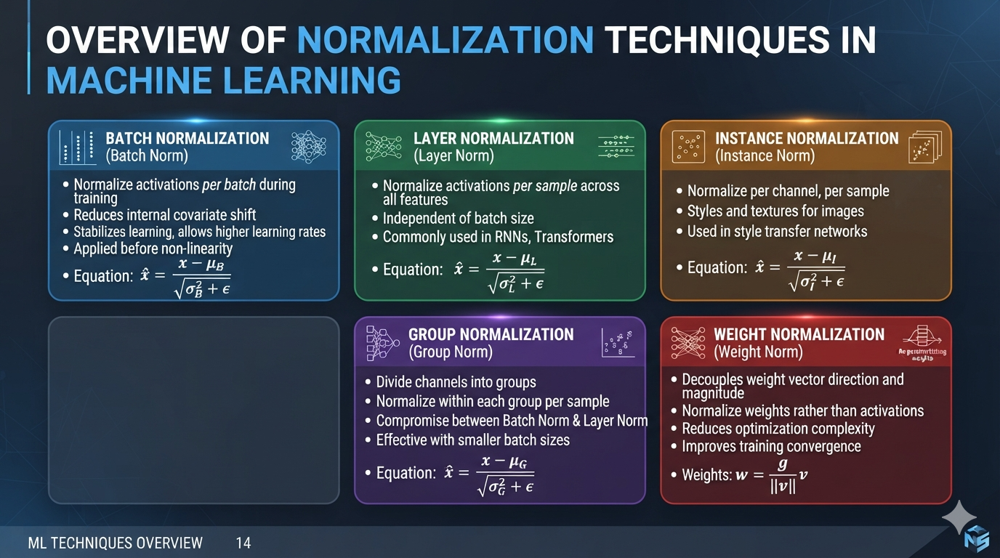
- Batch Normalization / Layer Normalization / Group Normalization
- Stable training / better gradients
Other Components of Interest ? Residual Connections
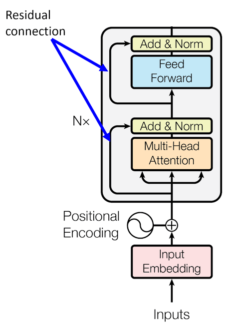
- Residual connections help in training deep networks — better gradients
- Better modelling (residual learning in each layer) and better information flow
Life Cycle of a Model
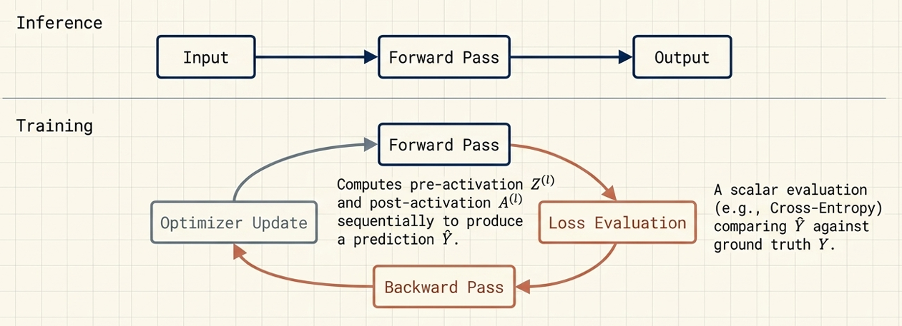
- Forward pass computes the output / loss.
- Backward pass computes the gradients of the loss with respect to the weights. (generally using chain rule of differentiation)
- Weights are updated using the gradients.
Optimization : Gradient Descent (and its variants)
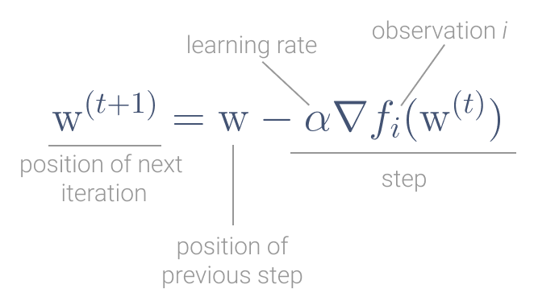

Optimization : Stochastic Gradient Descent
- Stochastic Gradient Descent is a variant of Gradient Descent where we use a subset of the data to compute the gradient.
- It is used to speed up the training process.
- Gradient is replaced by its estimate
- Important property is that the estimate is unbiased. Something to keep in mind when compressing gradients.
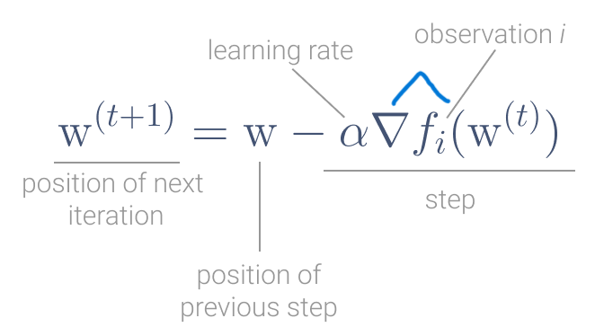
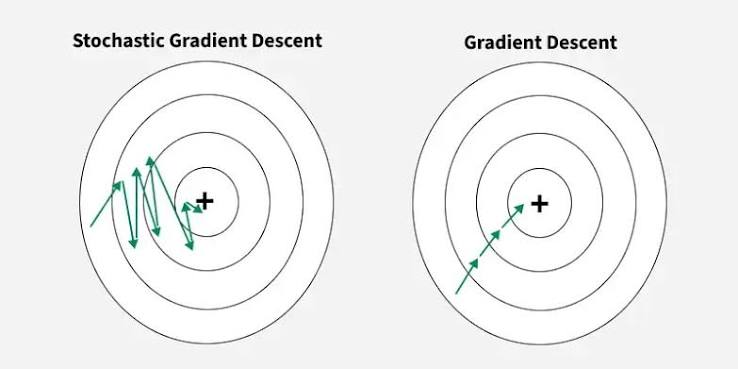
GPU memory usage in inference vs. training
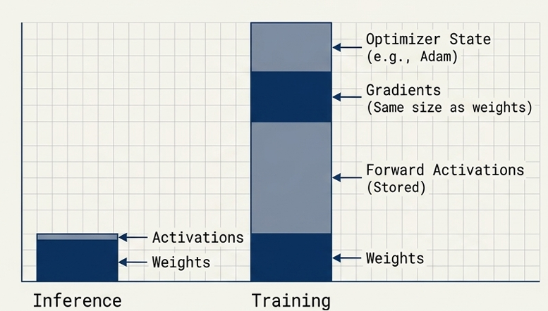

Backward pass needs us to store all layer activations, optimizer states and gradients. So training needs more memory than inference.